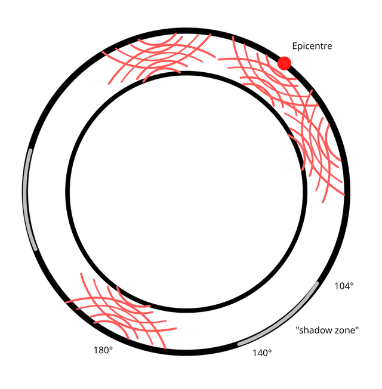

This model for how seismic waves from Earthquakes spread, that they loose energy with distance, then converge at other side of Earth, 180°, on a globular hollow planet with a lithosphere crust, and reverberate outwards 40° in all directions from that point diametrically opposite to epicentre. That model leads to a "shadow zone" between around 104° and 140°, fits perfectly with the data.
